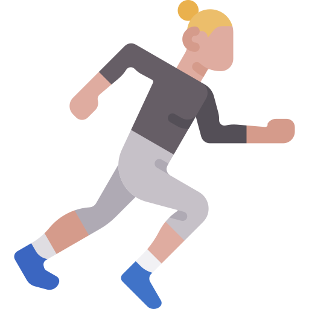

Los deportes que más gente practica
El fútbol, el baloncesto y el running están entre los deportes que más gente practica en el mundo.
Fútbol

Baloncesto

Running

El fútbol, el baloncesto y el running están entre los deportes que más gente practica en el mundo.
